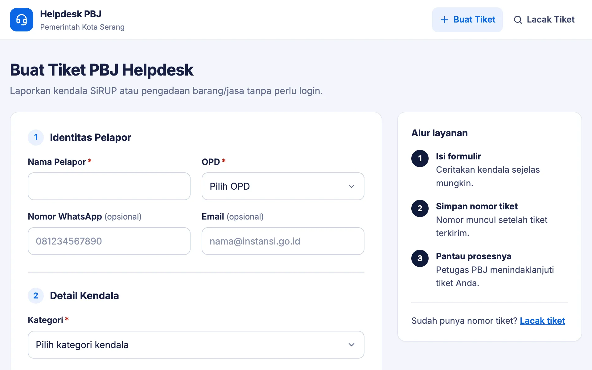

Halo, saya [Nama].
QA / Test Engineer. Saya memastikan aplikasi bekerja seperti yang dijanjikan, dan sesekali membangun aplikasi sendiri.
Karya
-

-
[Gambar karya QA]
[Contoh kerja QA]
[Mis. test plan, bug report, atau suite automation]
-
[Gambar karya]
[Proyek lain]
[Satu kalimat tentang proyek]
1 / 3
Tentang saya
[Dua sampai tiga kalimat tentang dirimu: sudah berapa lama di QA, di bidang apa, dan apa yang paling kamu sukai dari pekerjaan ini.]
Cara saya bekerja
- Mulai dari risiko
- [Bagaimana kamu menentukan apa yang perlu diuji lebih dulu.]
- Bug yang bisa diulang
- [Seperti apa laporan bug yang kamu tulis.]
- Cek ulang sampai tuntas
- [Bagaimana kamu memverifikasi perbaikan dan mencegah regresi.]
Pengalaman
- [2024 – sekarang][Peran] · [Perusahaan]
- [2022 – 2024][Peran] · [Perusahaan]
Alat yang biasa saya pakai
[Mis. Postman, Playwright, Selenium, JIRA, SQL]
Helpdesk PBJ
Proyek pribadi: aplikasi helpdesk untuk layanan pengadaan barang/jasa Pemerintah Kota Serang. Saya membangunnya sendiri dengan Laravel 13 dan Filament 4.
- Fitur
- Pengguna membuat dan melacak tiket tanpa login; petugas menindaklanjuti lewat panel admin.
- Pengujian
- 115 feature test otomatis.
- Dokumentasi
- PRD, technical design, runbook deployment, dan ADR.
Ditemukan dan diperbaiki lewat pengujian
- Pelacakan publik menolak semua nomor tiket.
- Unduh lampiran selalu gagal (error 500).
- Hapus permanen selalu gagal.
- Warna naik/turun di dashboard terbalik.
- Tipe kolom notifikasi tidak cocok dengan data.
Mari ngobrol.
Terbuka untuk peran QA dan proyek freelance.